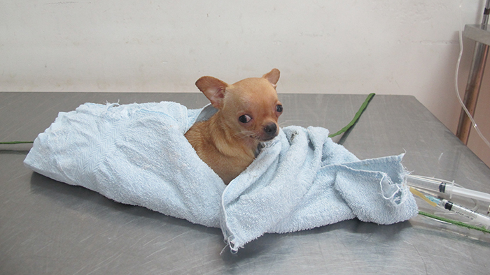
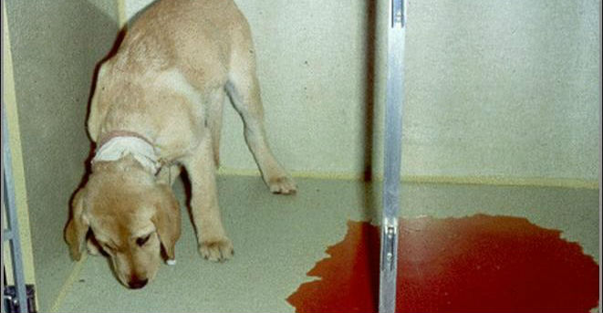
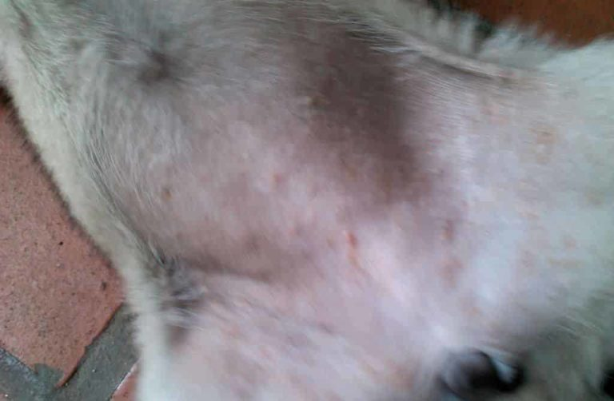
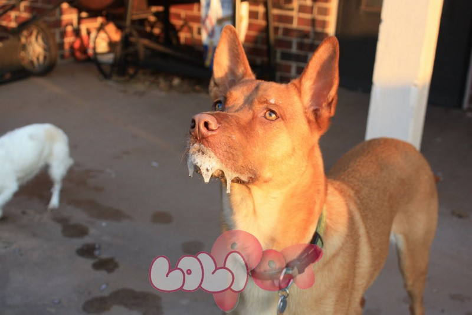
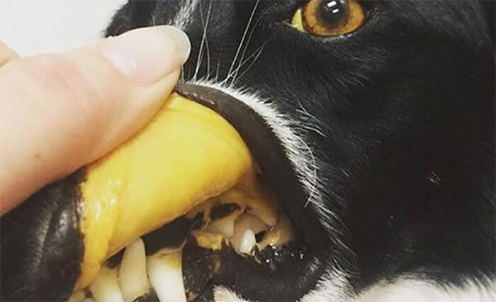
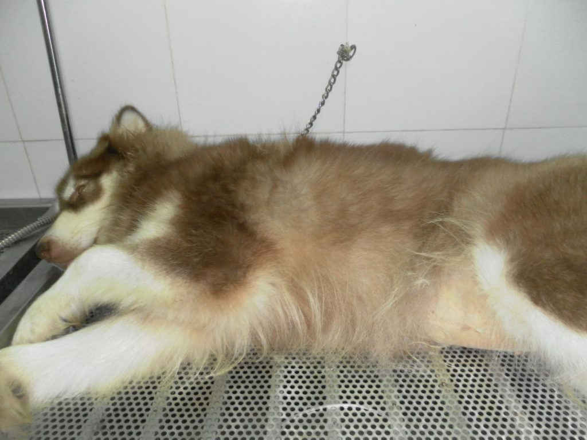

Khi bạn nuôi 1 chú chó, cũng giống như việc nuôi 1 đứa trẻ vậy. Bạn cần tìm hiểu thật kỹ các bệnh thường gặp ở chó. Qua đó, bạn sẽ biết cách phòng tránh các bệnh này và giúp cho chó cưng có 1 cuộc sống khỏe mạnh.
Chó cũng là 1 cơ thể sống. Nên việc chúng bị mắc bệnh trong quá trình nuôi dạy là hoàn toàn có thể xảy ra. Trên thế giới đã ghi nhận có hàng nghìn các loại bệnh của chó khác nhau. Mỗi bệnh đều có những mức độ nguy hiểm riêng. Dưới đây là 5 bệnh thường gặp ở chó và có mức độ nguy hiểm cao.
Đây là 1 trong những loại bệnh nguy hiểm bậc nhất ở chó. Là nỗi ám ảnh của nhiều người nuôi chó. Theo ông Nguyễn Văn Hòa – bác sĩ thú y tại Bệnh viện thú y PetHealth cơ sở Âu Cơ thì cứ đến mùa là bệnh viện lại chật kín các ca lây nhiễm Parvo.

Bệnh Parvo ở chó còn được gọi là bệnh viêm ruột truyền nhiễm. Bệnh này do Canine Parvovirus (CPV) gây ra và là 1 bệnh truyền nhiễm cấp tính. Biểu hiện của bệnh là gây ra hiện tượng viêm dạ dày – ruột xuất huyết.
Bệnh thường xuất hiện nhiều nhất trên chó con từ 1-6 tháng tuổi. Gây tỉ lệ chết rất cao lên đến 90-100%. Chó trên 6 tháng tuổi thường có sức đề kháng tự nhiên với bệnh.
Đến nay, bệnh vẫn chưa có thuốc điều trị đặc hiệu. Cách điều trị duy nhất là tăng sức đề kháng cho chó bằng các loại thuốc kháng sinh, thuốc bổ… Qua đó chó sẽ tự tạo kháng thể để đào thải mầm bệnh.
Do bệnh Parvo ở chó rất nguy hiểm và chưa có thuốc điều trị nên việc phòng bệnh là vô cùng cần thiết. Cách phòng bệnh hiệu quả nhất là tiêm vacxin cho chó. Những loại vacxin này có giá thành khá rẻ và luôn có sẵn tại các bệnh viện thú y.

Chó bị mắc bệnh Parvo
Nếu đã nhắc đến bệnh Parvo thì ko thể không nói đến bệnh Care ở chó. Đây là nguyên nhân gây ra cái chết cho rất nhiều chú chó mỗi năm.
Bệnh Care ở chó hay còn gọi là bệnh sài sốt là 1 bệnh truyền nhiễm cấp tính của loài ăn thịt. Bệnh lây lan rất mạnh với các biểu hiện như: ốt, viêm cata niêm mạc, đặc biệt là niêm mạc đường hô hấp, viêm phổi,…
Bệnh thường xuất hiện trên các giống chó nhập ngoại có độ tuổi từ 2-12 tháng. Đặc biệt là chó con khoảng 4 tháng tuổi. Chó trên 1 năm tuổi vẫn có nguy cơ mắc bệnh nhưng sẽ ít hơn.
Cũng như bệnh Parvo, bệnh Care ở chó hiện nay chưa có thuốc điều trị đặc hiệu. Để điều trị bệnh cần kịp thời bổ sung nước và các chất điện giải đã mất do ỉa chảy. Tăng cường sức đề kháng cho chó và đề phòng nhiễm trùng kế phát.
Bệnh Care ở chó là 1 loại bệnh nguy hiểm nên tuyệt đối không tự điều trị cho chó tại nhà nếu chưa có chỉ định của bác sĩ thú y.
Cách phòng bệnh Care ở chó hiệu quả nhất là tiêm phòng. Có nhiều loại vacxin phòng bệnh khác nhau phù hợp với túi tiền của chủ nuôi.

Những nốt sài là đặc trưng của bệnh Care
Nếu nói về những căn bệnh kinh điển ở chó thì ko thể ko nhắc tới bệnh dại. Trong thập niên 80,90 ở Việt Nam thì chó bị mắc bệnh dại rất nhiều.
Đây là 1 bệnh truyền nhiễm rất nguy hiểm ở chó mèo và đều do virus dại gây ra. Bệnh có thể lây lan từ động vật sang người. Chỉ cần 1 vết cắn gây rách da là bệnh đã có thể lây lan.
Bệnh dại có các biểu hiện như điên cuồng,bại liệt. 1 khi đã bị nhiễm bệnh thì gần như không có cách nào cứu chữa.
Biện pháp để phòng tránh bệnh dại hiệu quả nhất hiện nay đó chính là tiêm phòng. Trong những năm gần đây, bệnh dại ở Việt Nam đã giảm xuống rõ rệt do chính sách tiêm phòng bắt buộc của nhà nước.

Chó bị mắc bệnh dại
Căn bệnh này tuy không gây chết nhiều như bệnh Parvo hay bệnh Care. Nhưng khi đã nhiễm phải thì tỉ lệ tử vong cũng không phải là nhỏ.
Bệnh Lepto là bệnh truyền nhiễm chung giữa người, gia súc. Bệnh có các triệu chứng như sốt kéo dài giống như bệnh cúm, tổn thương gan thận, thậm chí gây viêm não.
Bệnh Lepto không loại trừ độ tuổi nào. Ở độ tuổi nào chó cũng có thể nhiễm bệnh. Tuy nhiên bệnh thường gặp ở trên chó đực.
Với đặc tính nguy hiểm của bệnh, nếu thấy chó cưng có bất cứ triệu chứng nào, bạn cần đưa chó tới cơ sở thú y gần nhất để khám chữa. Tuyệt đối không nên tự điều trị tại nhà. Và cần tìm hiểu, lựa chọn những cơ sở thú y uy tín để khám chữa.

Chó bị mắc bệnh Lepto
Bệnh cực kỳ nghiêm hiểm vì có thể gây tử vong cho chó chỉ sau 1 vài giờ.

Bệnh có thể xảy ra với tấc cả các giống chó chưa tiêm vaccine CVA-1. Đặc biệt là chó dưới 1 năm tuổi. Và bệnh hoàn toàn không lây sang người.
Khi bị nhiễm bệnh, chó thường có các biểu hiện như: sốt, bỏ ăn, tiêu chảy, nôn ra máu, đau quặn vùng bụng do sưng gan…
Để phòng tránh bệnh viêm gan, cách duy nhất là tiêm vacxin phòng bệnh đầy đủ cho chó cưng.
Bệnh viêm gan ở chó cũng không có thuốc điều trị đặc hiệu. Nếu phát hiện chó có bất kỳ dấu hiệu nào, bạn cần đưa chó đến ngay cơ sở thú y để điều trị. Để lâu sẽ rất nguy hiểm vì bệnh có thể gây tử vọng rất nhanh.

 Bài viết gần đây
Bài viết gần đây

August 31, 2019

August 31, 2019

August 31, 2019

August 31, 2019

August 31, 2019